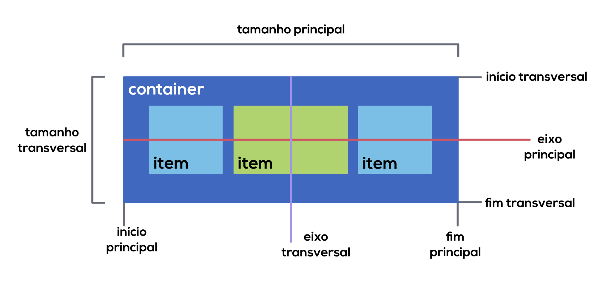

CSS Flebox
O Flexbox organiza os elementos de uma página HTML dentro de um container de forma dinâmica, independente das suas dimensões, mantendo um layout flexível dentro do seu elemento pai (container) e reorganizando-se de acordo com o tamanho da tela, de forma responsiva.
Alinhamento dos eixos
Para entender o funcionamento do Flexbox é importante entender como os itens são distribuídos no container, com eixo principal e eixo transversal.
Se a propriedade flex-direction receber o valor row ou row-reverse (organização em linhas), o eixo principal do container será o horizontal. Já se essa propriedade receber o valor column ou column-reverse (organização em coluna), o eixo principal será o vertical.
Consequentemente isso definirá qual é o eixo transversal. Se o principal for o vertical, o transversal será o horizontal e vice-versa.
- Tamanho principal: É a dimensão do elemento na direção do eixo principal (largura, caso horizontal e altura caso vertical);
- Tamanho transversal: É a dimensão do elemento na direção do eixo transversal (largura, caso horizontal e altura caso vertical);
- Início principal e final principal: Representam o início e o fim do eixo principal;
- Início transversal e final transversal: Representam o início e o fim do eixo transversal.
display
.container {
display: flex;
}
flex-direction
.container {
display: flex;
flex-direction: row;
}
- row (padrão): Os itens são organizados em forma de linha da esquerda para a direita
- row-reverse: Os itens são organizados em forma exibição em linha da direita para a esquerda
- column: Os itens são organizados em forma de colunas iniciando de cima para baixo
- column-reverse: Os itens são organizados em forma de colunas iniciando de baixo para cima